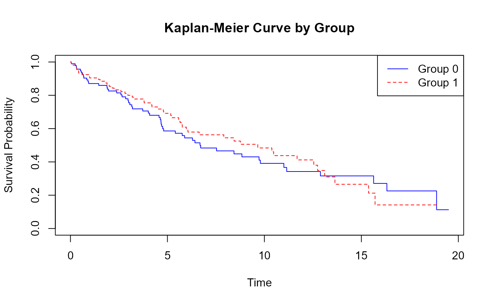
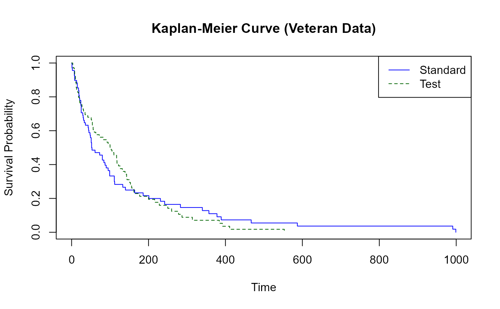

RMST-Based Sample Size Estimation
RMSTSS_Package_Vignette.RmdIntroduction
This vignette demonstrates how to use the RMSTSampleSize
package for sample size estimation using the Restricted Mean
Survival Time (RMST). RMST offers an interpretable and robust
alternative to hazard-based endpoints in survival analysis.
Simulated Data Example
set.seed(123)
n <- 200
lambda <- 0.1
T_true <- rexp(n, rate = lambda)
C <- runif(n, min = 0, max = 20)
time <- pmin(T_true, C)
status <- as.numeric(T_true <= C)
group <- sample(c(0, 1), n, replace = TRUE)
df <- data.frame(time = time, status = status, group = group)
fit <- survfit(Surv(time, status) ~ group, data = df)
plot(fit, col = c("blue", "red"), lty = 1:2,
main = "Kaplan-Meier Curve by Group",
xlab = "Time", ylab = "Survival Probability")
legend("topright", legend = c("Group 0", "Group 1"), col = c("blue", "red"), lty = 1:2)
Estimating RMST Difference
tau <- 15 # Truncation time
rmst_result <- rmst2(time, status, arm = group, tau = tau)
rmst_result$unadjusted.result## Est. lower .95 upper .95 p
## RMST (arm=1)-(arm=0) 0.6932216 -1.0042749 2.390718 0.4234746
## RMST (arm=1)/(arm=0) 1.0852650 0.8874742 1.327137 0.4254046
## RMTL (arm=1)/(arm=0) 0.8990915 0.6928470 1.166730 0.4236620Sample Size Calculation (Simulated Example)
alpha <- 0.05
z_alpha <- qnorm(1 - alpha / 2)
rmst_diff <- rmst_result$unadjusted.result[1, "Est."]
# Calculate StdErr from the 95% CI
lower <- rmst_result$unadjusted.result[1, "lower .95"]
upper <- rmst_result$unadjusted.result[1, "upper .95"]
rmst_se <- (upper - lower) / (2 * z_alpha)
desired_power <- 0.8
z_beta <- qnorm(desired_power)
n_required <- 2 * (z_alpha + z_beta)^2 * (rmst_se^2) / (rmst_diff^2)
ceiling(n_required)## [1] 25Real-Life Example: Veteran Dataset
data(veteran, package = "survival")
veteran$group <- ifelse(veteran$trt == 1, 1, 0)
fit2 <- survfit(Surv(time, status) ~ group, data = veteran)
plot(fit2, col = c("blue", "darkgreen"), lty = 1:2,
main = "Kaplan-Meier Curve (Veteran Data)",
xlab = "Time", ylab = "Survival Probability")
legend("topright", legend = c("Standard", "Test"), col = c("blue", "darkgreen"), lty = 1:2)
rmst_vet <- rmst2(veteran$time, veteran$status, veteran$group, tau = 100)
rmst_vet$unadjusted.result## Est. lower .95 upper .95 p
## RMST (arm=1)-(arm=0) 7.8895893 -4.6026010 20.381780 0.2157760
## RMST (arm=1)/(arm=0) 1.1311828 0.9300866 1.375758 0.2171120
## RMTL (arm=1)/(arm=0) 0.8020578 0.5622940 1.144058 0.2235039Using the Sample Size Function from the Package
sample_size_rmst <- function(effect_size, sd, alpha = 0.05, power = 0.8) {
z_alpha <- qnorm(1 - alpha / 2)
z_beta <- qnorm(power)
n <- 2 * (z_alpha + z_beta)^2 * sd^2 / effect_size^2
ceiling(n)
}
# Example usage
sample_size_rmst(effect_size = 2, sd = 3)## [1] 36Pooled Variance Function
pooled_variance <- function(var_vec, n_vec) {
if(length(var_vec) != length(n_vec)) stop("Length mismatch.")
num <- sum((n_vec - 1) * var_vec)
denom <- sum(n_vec) - length(n_vec)
num / denom
}
# Example
pooled_variance(c(0.5, 0.6), c(80, 120))## [1] 0.560101Summary
This vignette demonstrates:
- RMST estimation using
survRM2::rmst2() - Sample size estimation based on RMST difference
- Use of simulated and real-world datasets
- Utility functions like
sample_size_rmst()andpooled_variance()
References
- Uno et al. (2014), Moving beyond the hazard ratio in quantifying the between-group difference in survival analysis.
- survRM2 package documentation: https://cran.r-project.org/web/packages/survRM2/